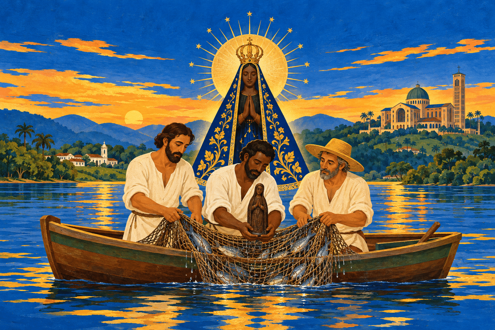

12 de outubro
DevoçãoPadroeira do Brasil
OrigemImagem encontrada em 1717

Mãezinha do céu, eu não sei rezar
Eu só sei dizer: Eu quero te amar
Azul é seu manto, branco é seu véu
Mãezinha eu quero te ver lá no céu
Mãezinha eu quero te ver lá no céu
Mãezinha do céu, Mãe do puro amor
Jesus é teu Filho, eu também o sou
Azul é seu manto, branco é seu véu
Mãezinha eu quero te ver lá no céu
Mãezinha eu quero te ver lá no céu
Mãezinha do céu, vou te consagrar
Minha inocência, guarda sem cessar
Azul é seu manto, branco é seu véu
Mãezinha eu quero te ver lá no céu
Mãezinha eu quero te ver lá no céu
Reserve um instante de silêncio para a sua intenção.
Feita de terracota, a imagem tem cerca de 36 centímetros de altura.
Domingos Garcia, João Alves e Filipe Pedroso estão ligados à origem da devoção.
A coroação solene da imagem ocorreu em 8 de setembro de 1904.
O reconhecimento oficial consolidou uma devoção já espalhada pelo país.